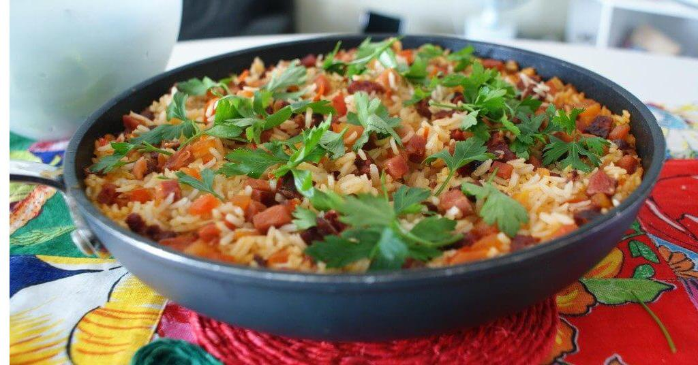

Maria-Isabel
Sobre a Receita
O prato e basicamente Arroz e Carne de Sol com um tempero unico e um opcional de Cheiro Verde.

🧾 Ingredientes
- 500 g de carne de sol picada em cubos pequenos
- 2 xícaras de arroz
- 1 cebola grande picada
- 1 cebola grande picada
- 2 colheres de sopa de manteiga de garrafa (ou óleo)
- Pimenta-do-reino a gosto
- Cheiro-verde picado
- Água quente (para cozinhar o arroz)
- Sal (se necessário)
👨🍳 Modo de Preparo
- Carne: Se a carne de sol estiver muito salgada, deixe de molho por 1 hora, trocando a água.
- Pique em cubos pequenos para render mais sabor.
- Refogando: Aqueça a manteiga de garrafa em uma panela grande.
- Acrescente a carne de sol e deixe fritar bem até dourar.
- Adicione a cebola e o alho e refogue até murchar.
- Cozinhar o arroz:
- Acrescente o arroz cru e misture bem com a carne e os temperos.
- Refogue por 1 minuto para pegar sabor.
- Adicione água quente até cobrir (cerca de 2 dedos acima do arroz).
- Ajuste o sal (com cuidado, pois a carne já é salgada).
- Cozinhe em fogo médio até secar.
- Quando o arroz estiver cozido, desligue e coloque cheiro-verde a gosto.
⏱️ Preparo
15 a 20 minutos
🔥 Cozimento
35 a 45 minutos
🕒 Total
60 minutos
🍘 Rendimento
cerca de 4 a 5 pessoas
💰 Custo Médio
aproximadamente R$ 35 a R$ 60